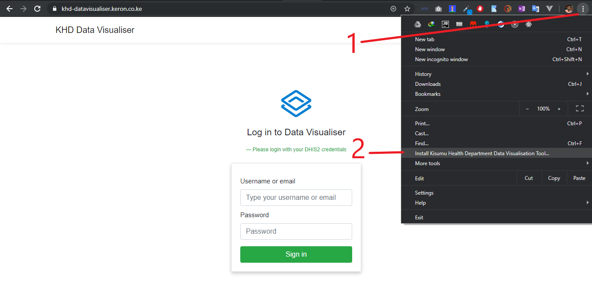
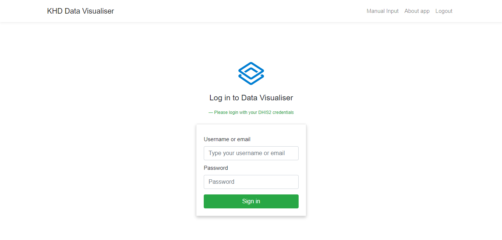
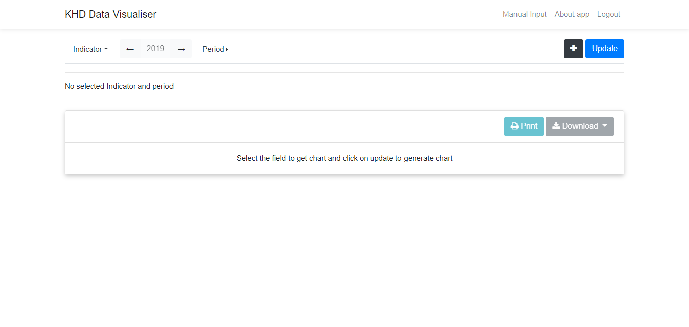
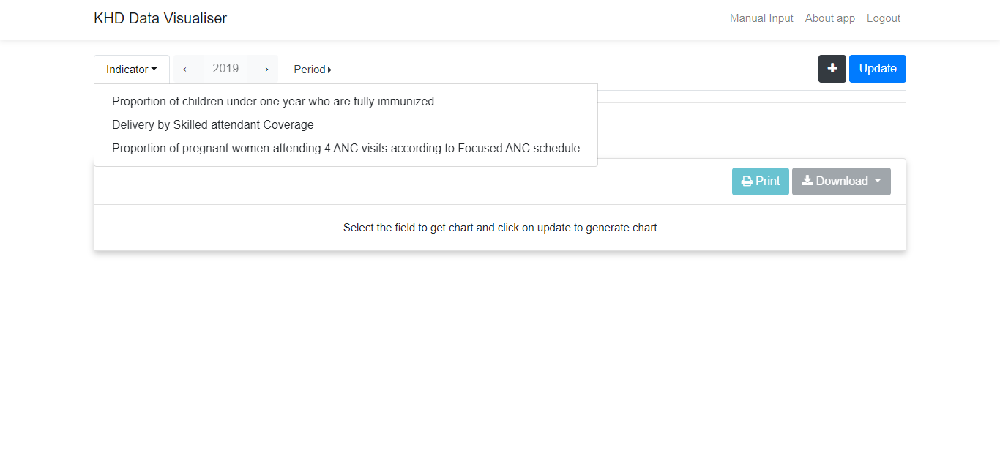
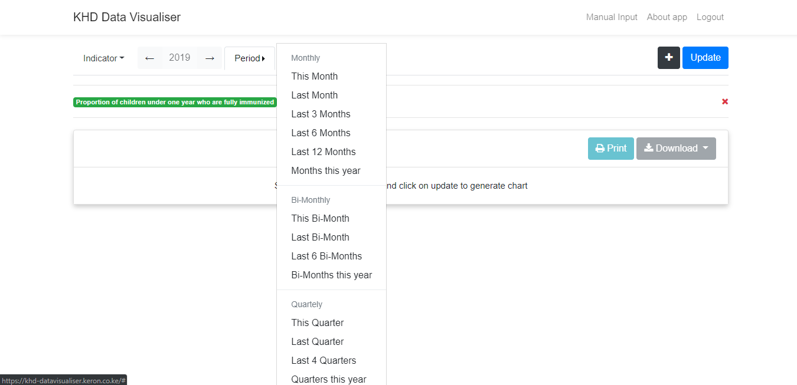

Kisumu Health Department Data Visualisation Tool
Documentation for DHIS2 Created Charts
For Manually Created Charts, kindly refer to this documentation here.
Table of contents
- About application
- Where to find the application
- Requirements to use the application
- Installability
- Using the application:
- Logging out
About application
The Kisumu Health Department Data Visualisation Tool is a web based application that can be used to generate charts of indicators from DHIS2. In addition, charts can also be generated manually without the use of DHIS2 to form custom charts that can be printed and presented.
Where to find the application
The application can be found at https://khd-datavisualiser.keron.co.ke where it is hosted and can be run right from the browser.
Requirements to use the application
The application requires that you have DHIS2 credentials to log in and use the application. Your credentials are what allow you to access the DHIS2 Charts
Installability
The application can be installed on any device that supports an updated Google Chrome browser. This includes android phones, ios devices and PCS. This app can also be installed on safari browser as well as Microsoft Edge that runs on chromium.

How to install the application
The application can be installed via Google Chrome using the chrome menu, you should see a "Install Kisumu Health Department Data Visualisation Tool" (Ensure you are on a HTTPS connection to the application to install). After clicking, please wait for a short while, where a dialog will appear asking you if you want to install the application. Click on Okay and after a short while,a new window will be opened and can be accessed now as an application. On your mobile device, to install, open chrome and open the url. When the application has loaded click on chrome's menu then select Add to homescreen. A dialog will appear, then click on Add. The application will be added to your list of applications.
Using the application
Logging in
Once the page or application has loaded, you will see a logging in form requesting you to input
your username or email and password. Fill in the form using your DHIS2 credentials. Upon successful logging in, you will be able to access the application.

Logging in page
Home screen
Once you have logged in you will see the following home screen from where you can generate the DHIS2 charts.

Home page
Generating of charts
Charts are generated in three simple steps:
1. Select the indicator to generate chart for
Simply click on indicator to select the available indicator to create a chart for.

Selecting Indicators
2. Select the period to generate the chart for
The year to generate the chart for is indicated with two arrows, one facing left another right. Click on either to increment or decrement the year. Then Simply click on period to create a drop down to select the available periods to create a chart for.

Selecting Periods
3. Click or tap on Update to Generate chart
To finally generate the chart, click on the blue button with the words "Update" to generate the chart.
Adding more charts for comparison
To add more charts, click on the black button with a "+" plus sign that will create a new field to generate charts for. The same procedure applies for generating the new chart. Click here to see how.
Printing and Downloading images
The application allows you to print the charts generated and also allows you to donwload images of the charts generated. Every chart generated has to buttons at the top right
Logging out
It is advised that after using the application to log out so that anyone who might use your computer or mobile phone may have access to sensitive information thus the need to log out of the application once done. Just click or tap on Log out on the menu or navigation bar to successfully log you out of the application.
This documentation is maintained by Karim K. Kanji